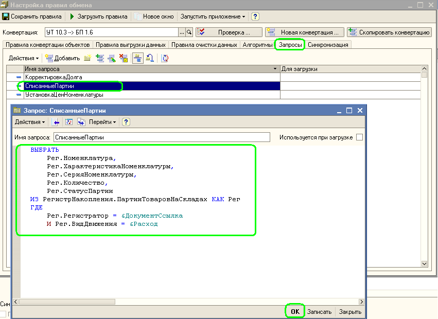

Допустим у нас есть правила обмена данными. При этом два разных правила конвертации объектов используют абсолютно одинаковые по структуре выборки данных, только с разными параметрами. Возникает резонный вопрос, а можно ли где-нибудь зафиксировать этот запрос, а затем использовать его во всех местах где нужно. Для этих целей существуют Запросы.
Технология использования очень проста. На закладке "Запросы" создаем и описываем текст запроса:

Далее в тексте обработчиков можно использовать такой код:
Аналогично обстоят дела с алгоритмами. Кода один и тот же кусок кода должен быть выполнен в различных местах, удобно записать отдельный алгоритм, а затем просто вызывать его из тех мест, где он нужен.

А вызов этого кода будет очень прост: Выполнить(Алгоритмы.СоздатьТаблицу);